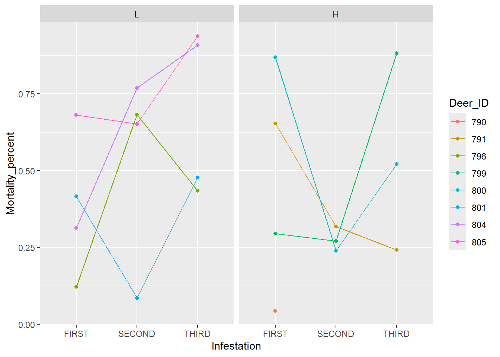

── Attaching core tidyverse packages ──────────────────────── tidyverse 2.0.0 ──
✔ dplyr 1.1.4 ✔ readr 2.1.5
✔ forcats 1.0.0 ✔ stringr 1.5.1
✔ ggplot2 3.5.2 ✔ tibble 3.2.1
✔ lubridate 1.9.4 ✔ tidyr 1.3.1
✔ purrr 1.0.4
── Conflicts ────────────────────────────────────────── tidyverse_conflicts() ──
✖ dplyr::filter() masks stats::filter()
✖ dplyr::lag() masks stats::lag()
ℹ Use the conflicted package (<http://conflicted.r-lib.org/>) to force all conflicts to become errors
library(emmeans)
Welcome to emmeans.
Caution: You lose important information if you filter this package's results.
See '? untidy'
load("data_processed.RData")
Contrasts to test
Vaccination group vs non-vaccination group on Number of Larvae and Mortality.
Vaccination dosage, low or high.
Does the vaccine lose effectiveness over the course of the experiment.
Experimental Design
We have 12 experimental units, the deer. Some deer are pre infested, and that data is collected as a baseline before vaccines are applied.
There are three treatments, the vaccination a deer receives. It has three levels, Control, Low, and High.
The measurement unit is a tick, there were plans for 50 ticks for each deer but in the experiment this was not adhered to.
There are repeated measurements as the experiment was performed three times with a new group of 50 ticks to examine the vaccination effectiveness over time.
The response variables are the mortality, and measurements of egg quality if the tick laid them.
There was one covariate, the weight of the tick before being attached to the deer.
Since only six of the deer have observed pre-infestation testing, for simplicity and since our is to measure the time and overall effect of vaccines we will filter out that data:
Lets see if there are any hints towards to a time trend in this data, particularly focusing on the vaccinated groups:
grouped_data |>filter(Vaccine_Group !="C") |>ggplot(aes(x = Infestation, y = Mortality_percent, group = Deer_ID)) +geom_line(aes(color = Deer_ID)) +geom_point(aes(color = Deer_ID)) +facet_wrap(~Vaccine_Group)

In the low vaccination group it looks like the vaccine becomes more effective over time, in the high vaccination group it is more mixed but it appears the vaccine loses effectiveness.
grouped_data |>filter(Vaccine_Group !="C") |>ggplot(aes(x = Infestation, y = avg_larvae, group = Deer_ID)) +geom_line(aes(color = Deer_ID)) +geom_point(aes(color = Deer_ID)) +facet_wrap(~ Vaccine_Group)
In the low vaccination group it looks like the vaccine becomes more effective over time at limiting larvae births, in the high vaccination group it is more mixed but it appears the vaccine loses effectiveness.
It does appear there is a time effect in this data. And there also appears to be an interaction between the vaccine group and the infestation time.
Shapiro-Wilk normality test
data: grouped_data$avg_larvae
W = 0.95739, p-value = 0.2039
Model
Discussion:
This is not exactly a repeated measures problem, we are using a new set of ticks each time we perform the experiment. Additionally we are not given information on the time gaps between experiments, whether they were evenly spaced/the order of examination between each group. For that reason I will treat the time factor as an additional factor in the experiment.
This leaves us with a 3x3 experimental design, Vaccine x Infestation, with 4 deer in each group and an uneven number of ticks being treated as a sub sample.
library(lme4)
Loading required package: Matrix
Attaching package: 'Matrix'
The following objects are masked from 'package:tidyr':
expand, pack, unpack
The first goal of vaccination is for to ticks to die. If ticks do not die, the hope is that vaccination will limit the number of larvae that are produced by the ticks.
To model the larvae, we must first filter out ticks that die before giving birth as we have analyzed vaccine effectiveness for that goal in our model.
Vaccine_Group Infestation response SE df lower.CL upper.CL
C FIRST 1105 91.1 700 933 1291
L FIRST 1366 89.4 700 1196 1547
H FIRST 956 85.8 700 795 1131
C SECOND 1413 88.2 700 1245 1591
L SECOND 1364 108.0 700 1160 1584
H SECOND 1268 90.4 700 1097 1451
C THIRD 1588 127.0 700 1348 1848
L THIRD 920 127.0 700 688 1185
H THIRD 1505 149.0 700 1228 1812
Confidence level used: 0.95
Intervals are back-transformed from the sqrt scale
em_df_2 = emm2 |>as.data.frame()
em_df_2 |>ggplot(aes(x = Infestation, y = response, color = Vaccine_Group, group = Vaccine_Group)) +geom_point() +geom_line() +geom_errorbar(aes(ymin = lower.CL,ymax = upper.CL, width = .1))